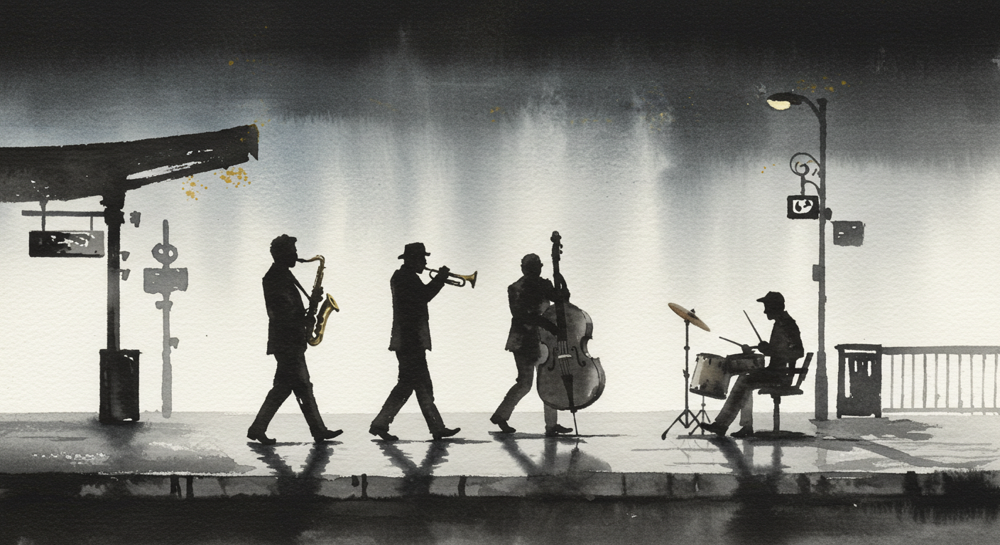
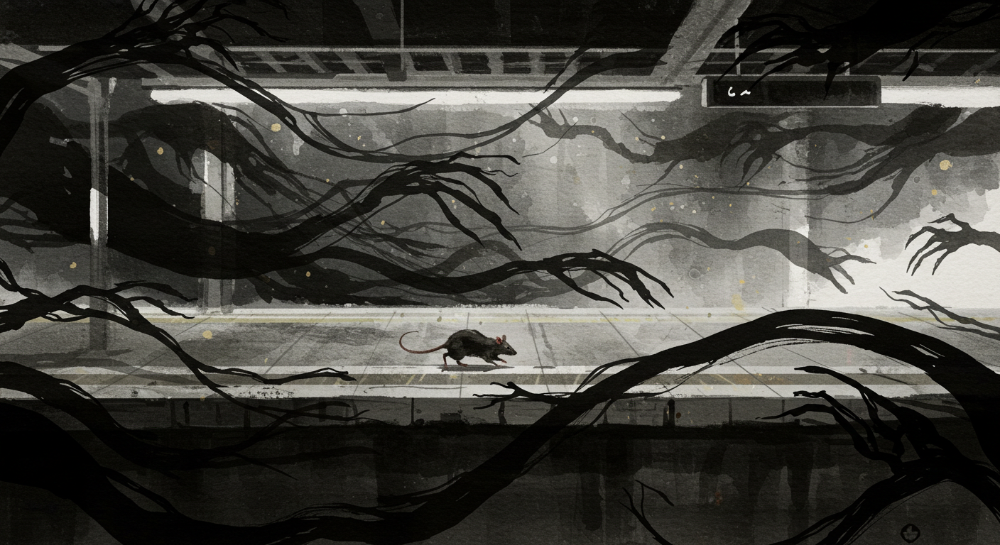

街角でひらく小さな謎
スマホ1つで、ふらっと街へ。ARで“現地だけの手がかり”を見つけながら物語を進めよう。
新着

NEW
文学に埋もれた部屋
商店街に漂う“消えたモチーフ”の噂。看板、レシート、古い掲示板——街の断片から真相へ近づく。
詳細を見る
NEW
茎と魚は何故消えたのか？
商店街に漂う“消えたモチーフ”の噂。看板、レシート、古い掲示板——街の断片から真相へ近づく。
詳細を見る
配信中の物語

幼い時の記憶 懐かしの遊具
なくなった遊具の手がかりを追って、路地裏と屋上をめぐる小さな探偵行。最後に待つのは——。
詳細を見る
戦艦島
地図から消えた島影の由来。古写真、社標、倉庫跡——欠けたピースを埋めていく現地パズル。
詳細を見る